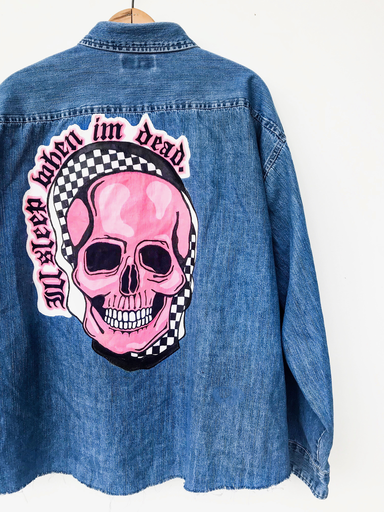

About Me
Hi, my name is Sophie and I'm a Creative yielding from New Jersey but currently based in Miami,Florida. I am an illustrator and graphic designer and studying creative advertising at the Univeristy of Miami. My background is in fine arts, so my creative process always begins with a pencil and a sketchbook. Other talents include hand lettering, watercolor, social media content creation, and now I am officially VERY below average at html and css. Combined with my knowledge of color theory and composition, I can make my terrible code look ALMOST pretty.

Work
Last Spring I was assigned the task of creating a body of work inspired by a peom or a song. I chose to illsutrate a series that was portraits of women who I thought of when I heard the song "She Moves In Her Own Way" by the Kooks. The women are all strong leader who, in my opinion, move in their own way and inspire me to do the same.
As a passion project of mine I often enjoy going to thrift shops and finding old denim that I can customize, paint, and refurbish. To the right you can view a denim shirt I painted and styled in my free time.
For my strategic communications class last spring, I was given the assigment to rebrand a album. I chose to rebrand Mac Miller's album Swimming as a tribute to him and his music. I created a contour line drawing of the artist to represent one of the album's main themes which was his battle with mental health, and I used black and white along with contrasting orange and blue colors.